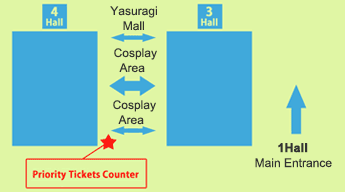

A cosplay event is planned for Public Days
TOKYO GAME SHOW 2012 will feature Cosplay Areas in Yasuragi Mall (between Halls 3 and 4) as well as outside the venue on the south side (ocean side). And on September 22 (Sat), Cosplay Collection Night @TGS presented by Cure will be held starting at 18:30 in Hall 8 (Event Stage). We hope all cosplayers will be sure to attend.
Cosplay Collection Night @TGS presented by Cure

Details
| Time | September 22 (Sat) 18:30-20:00 |
|---|---|
| Venue | Event Stage, Hall 8, Makuhari Messe |
| Performers | KANAME☆, Reika, YUIMINO, Onnies (Thailand), Heyleydia (Thailand), Team SHIKON, and around 200 other cosplay performers Producer: Tatsumi Kan (Cure) MC: Yunmao Ayakawa DJ & MC: WAN (Cosplay Heaven/Ota-Rhythm/Happyakumankikan) VJ: Toshiki Fukazawa (RawLight/HighLIKE) |
| Sponsor | Cure (NHN Japan Corp.)http://curecos.com/ |
How to Participate
A numbered ticket is required for participation in Cosplay Collection Night. Tickets will be distributed on Saturday, September 22 in the Cosplay Area of the Yasuragi Mall (the area between Makuhari Messe Exhibition Halls 3 and 4).

* Tickets are limited. Distribution will end when the set number has been reached.
* Participation is not limited to cosplayers, but is open to everyone.
* Admission to Tokyo Game Show 2012 will end at 4:00 PM. Participants should be sure to enter Tokyo Game Show 2012 by 4:00 PM.
Admission Procedures
After the exhibition closes at 5:00 PM, gather at the assembly point near the Food Court in Exhibition Hall 7. At about 6:00 PM, participants will be led by a staff member to the Exhibition Hall 8 Event Stage.
* Your ticket will be checked at the time of admission. Be sure to bring it with you.
* The cosplay changing room in Exhibition Hall 7 will be available until 9:00 PM on the 22nd for Cosplay Collection Night participants only.
* Be sure to keep any valuables with you at all times.
* The organizers will not, for any reason, be liable for the loss of or damage to valuables or other personal items brought into the venue.
To Cosplayers (Requests and Notices)
2002-2012 CESA / Nikkei Business Publications, Inc. All rights reserved.